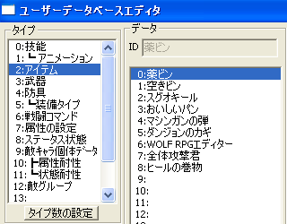
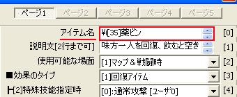
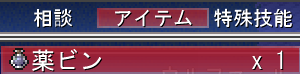
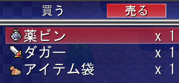

今回は「2:アイテム」の項目を例にしますので、「2:アイテム」をクリックしてください。

|
アイテムの名前にアイコンを付けます。 ここでは、サンプルゲームのアイテム「薬ビン」を例にしてアイコンを付けていきます。 ※関連項目 アイテム（道具）の種類を増やしたい アイテム（武器）の種類を増やしたい アイテム（防具）の種類を増やしたい |
|
まず、 今回は「2:アイテム」の項目を例にしますので、「2:アイテム」をクリックしてください。 |  |
|
次に、アイコンを付けたいアイテムを選択します。 データIDのアイテム名をクリックしてください。（【1】画像の右欄） →分からないときは、アイテム（道具）の種類を増やしたいの【1】〜【4】を参考に。 |
|
画像の赤枠内にある アイテム名に、 直接アイコンを表示する特殊文字\i[番号]を追加します。 ※ []内に入れる数字によって表示されるアイコンが変わります。 どの数字でどのアイコンが表示されるのかは、「Data」フォルダ内の「BasicData」フォルダを参照してください。 重要！ ver1.20では、78番から112ごとにアイコンが使用できないバグがあります。 ver1.20では「78」「190」「302」などの番号のアイコンは使用しない。 もしくはver1.30以上を使用するなどしてください。 |  |
|
追加したら更新ボタンかOKボタンをクリックしてください。 これで変更が保存されました。 |
|
最後に、ゲーム内できちんと表示されているか確認をしましょう。 画像のように、アイテム名の前にアイコンが表示されていたら成功です。 もしもうまく表示できていなかったら…。 \や数字が全角になっていないか、[]を忘れていないかなどを確認してください。 |  |
|
上ではアイテムを例にしましたが、 武器と防具にもアイコンを追加する事が出来ます。 【2】の所で「3:武器」もしくは「4:防具」を選択します。 後はアイテムの時と同じく、【3】の要領で\i[番号]を追加するだけです。 |  |